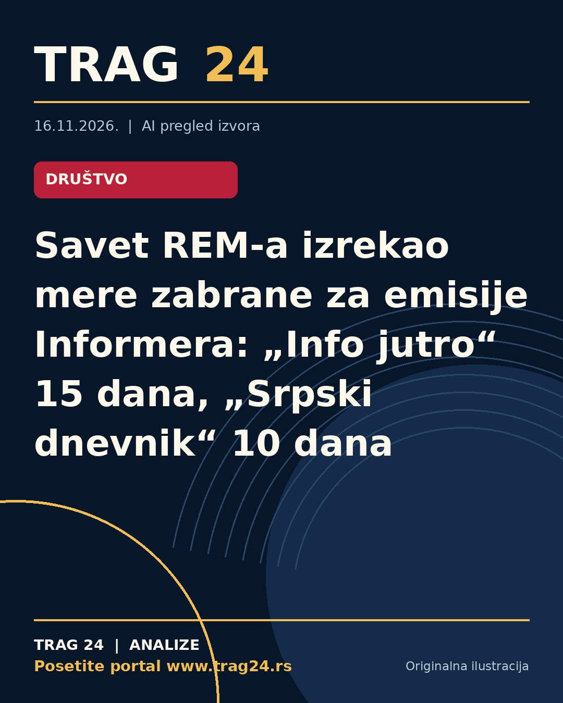

Savet REM-a izrekao mere zabrane za emisije Informera: „Info jutro“ 15 dana, „Srpski dnevnik“ 10 dana

ŠTA SE DOGODILO
Regulatorno telo za elektronske medije (REM) izreklo je televiziji Informer mere zabrane emitovanja emisije „Info jutro“ na 15 dana i emisije „Srpski dnevnik“ na 10 dana, kao i meru zabrane oglašavanja u trajanju od sedam dana u vremenskom terminu od 18 do 21 čas. Ove sankcije donesene su zbog utvrđenih kršenja zakonskih normi, uključujući i kršenje izborne tišine tokom emitovanja određenih emisija.
HRONOLOGIJA
Na današnjoj sednici REM-a razmatrane su tri prijave protiv televizije Informer, uključujući prijave vezane za emisije „Info jutro“, „Srpski dnevnik“ i „Specijalni kolegijum“. Prijave su uključivale i gostovanje lidera Srpskih suverenista u emisiji, kao i emisiju sa gostom Aleksandrom Vučićem emitovanu tokom izborne tišine pred ponovljeno glasanje. Ranije, REM je Informeru izrekao zabranu emitovanja emisije „Kolegijum“ na 25 dana i zabranu reklama na pet dana. Takođe su donesene odluke o merama protiv drugih televizija kao što su Kurir, B92 i K1.
ŠTA NAVODE IZVORI
Prema saznanjima Danasa, član Saveta REM-a Miloš Garić naglasio je da je REM ranije izrekao ozbiljne mere, ali da bi trebalo sačekati da se vidi njihov efekat pre uvođenja novih drastičnijih sankcija. Članica Saveta Dubravka Valić Nedeljković izrazila je zabrinutost zbog navodnog nepoštovanja i omalovažavanja rada regulatora od strane Informera. Predsednik REM-a Stevica Smederevac istakao je ozbiljnost situacije za medijsku kuću, ali i da program Informera neće biti u potpunosti zaustavljen. Advokati Informera kritikovali su izveštaj REM-a kao tendenciozan i osporili neke ocene o podršci voditeljke sagovorniku. U vezi sa kršenjem izborne tišine, advokati su istakli da je institut izborne tišine zastareo i da su i drugi emiteri kršili pravila bez posledica.
ŠTA JE POTVRĐENO
Potvrđeno je da je REM doneo odluke o zabrani emitovanja pomenutih emisija i zabrani oglašavanja za Informer, nakon utvrđenih nepravilnosti. Takođe je potvrđeno da su u toku razmatranja bile tri prijave protiv Informera povezane sa konkretnim slučajevima i emisijama. REM je ranije i drugim medijima izrekao različite mere zbog kršenja zakonskih i regulatornih normi. Nije osporeno da je došlo do kršenja odredbi o izbornoj tišini u emisiji tokom koje je gost bio Aleksandar Vučić.
ŠTA NIJE POTVRĐENO
Nije potvrđeno da su pojedini navodi o sadržaju emisija, posebno tvrdnje advokata Informera o izvučenim rečima iz konteksta i o ciljevima REM-a da ukine emisije te televizije, tačni ili dokazane. Nema potvrde o efikasnosti ili efektima prethodno izrečenih mera na Informer. Takođe, nisu dostupni detalji o daljim koracima televizije Informer povodom najavljenih protivprijava i monitoringa drugih medija.
ŠTA OSTАJE OTVORENO: Ostaje nejasno kako će se novi izrečene mere odraziti na budući rad Informera i da li će uslediti dodatni disciplinski postupci ili sankcije. Takođe, nije poznato kako će REM pratiti i reagovati na najavljene prijave Informera protiv drugih medija. Ostavlja se prostor i za posmatranje da li će doći do promene u poštovanju regulatornih normi i komunikaciji između REM-a i televizije Informer.
Izvori
- https://www.danas.rs/vesti/drustvo/savet-rem-a-zabranio-info-jutro-na-informeru-na-15-dana-srpski-dnevnik-na-10-dana/
- https://nova.rs/vesti/drustvo/savet-rem-a-zabranio-informeru-info-jutro-na-15-a-srpski-dnevnik-na-10-dana/
- https://n1info.rs/vesti/savet-rem-a-zabranio-informeru-info-jutro-na-15-asrpski-dnevnik-na-10-dana/
Ova analiza je pripremljena uz pomoć veštačke inteligencije na osnovu javno dostupnih izvora. Navodi izvora nisu nužno nezavisno potvrđeni.